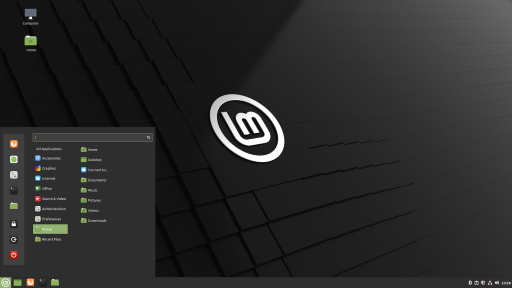
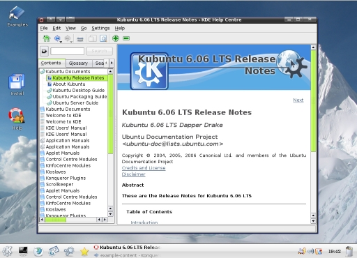

Linux Mint é uma distribuição Linux irlandesa. Possui duas versões: uma baseada em Ubuntu e outra versão baseada em Debian. Suporta muitos idiomas, incluindo a língua portuguesa, e utiliza o Cinnamon como seu principal ambiente de desktop. Esforça-se para ser um "sistema operacional moderno, elegante e confortável, que é poderoso e fácil de usar" e possui suporte da mídia pronto para o uso, incluindo alguns softwares proprietários e vem com uma variedade de aplicativos gratuitos e de código aberto.
O sistema tem relativa familiaridade a usuários de Windows, sendo ao meu ver um sistema interessante a iniciantes com sistemas Linux. O sistema é bem simples, no entanto isso as vezes acaba sendo criticado devido a sua simplificação, por exemplo em 2016 houveram invasões a sistemas devido a simplificações nos sistemas de segurança originais do Ubuntu e Debian.
Fundo Linux Mint
O sistema diferencia-se do Ubuntu e do Debian por incluir drivers e codecs proprietários por padrão e por alguns recursos que permitem fazer em modo gráfico(GUI) configurações que em ambos os sistemas são feitas através do modo texto. Utiliza por padrão o desktop Cinnamon, um derivado do GNOME, com um menu no painel inferior junto à barra de tarefas (o MintMenu), similar ao menu do KDE, ou o menu "Iniciar" do Windows. O propósito da distribuição é providenciar um sistema Linux que funcione imediatamente após a instalação, deixando para o usuário apenas configurações adicionais opcionais. Parte do desenvolvimento é feito em Python e organizado on-line usando o GitHub, tornando mais fácil para os desenvolvedores fornecer patches, implementar recursos adicionais e também extrair subprojetos do Linux Mint (por exemplo, o menu Linux Mint foi portado para o Fedora). A cada lançamento, são adicionados recursos desenvolvidos pela comunidade. No Linux Mint 9, por exemplo, a capacidade de editar itens de menu é um recurso que foi contribuído por um usuário do Linux Mint.
A comunidade do Linux Mint é incrívelmente influente em seu desenvolvimento, algo natural em um projeto open source. O próprio site do sistema tem áreas designadas para sugestões, e como foi exemplificado anteriormente alterações feitas por usuários são relativamente comuns.
O Linux Mint em maior parte é de software livre, no entanto existem certos que são proprietários, como os necessários para o funcionanmento de MP3, MP4, WMA, WMV, isso é muito incomum para sistemas Linux, visto que entre a comunidade o desenvolvimento usando software livre é muito favorecido, muitas vezes sendo um dos grandes apelos do Linux.
O linux tem algumas distribuições, os dois principais grupos como já foi anteriormente listado são os baseados em Ubunto e a versão baseada no Debian. As versões baseadas em Ubuntu são: Cinnamon, MATE, Xfce. Enquanto isso o Debian tem apenas uma versão, chamada de Debian Edition, essa sendo menos recomendada para iniciantes.
Linux Mint Cinnamon
O projeto foi concebido por Clément Lefèbvre e está sendo desenvolvido ativamente pelo Linux Mint Team e pela comunidade. Começou em 2006 com uma versão beta do Linux Mint 1.0, codinome "Ada", baseado no Kubuntu. Após seu lançamento, o Linux Mint 2.0 "Barbara" foi a primeira versão a usar o Ubuntu como base de código. O Linux Mint tinha poucos usuários dessas versões iniciais até o lançamento do Linux Mint 3.0, "Cassandra". A partir daí, o Linux Mint seguiu sua própria base de código, construindo cada versão do seu anterior, mas continuou usando os repositórios de pacotes do último lançamento do Ubuntu. Isso resultou em tornar a base entre os dois sistemas quase idêntica, garantindo total compatibilidade entre as duas distribuições.
Linux Mint Ada
Em 2008, o Linux Mint adotou o mesmo ciclo de lançamento do Ubuntu e baixou seu número de versão menor antes de lançar a versão 5 "Elyssa". No mesmo ano, em um esforço para aumentar a compatibilidade entre os dois sistemas, o Linux Mint decidiu abandonar sua base de código e mudou a forma como construiu seus lançamentos. Começando com o Linux Mint 6 "Felicia," cada lançamento foi agora completamente baseado no último lançamento do Ubuntu, construído diretamente a partir dele, e cronometrado para aproximadamente um mês após o lançamento correspondente do Ubuntu, geralmente em maio ou novembro.
Em 2010, o Linux Mint lançou o Linux Mint Debian Edition (LMDE). Ao contrário das outras edições baseadas no Ubuntu (Ubuntu Mint), o LMDE era originalmente uma versão baseada diretamente no Debian rolling release e não estava vinculado aos pacotes do Ubuntu ou ao seu cronograma de lançamento. Foi anunciado em 27 de maio de 2015 que a equipe do Linux Mint não suportaria mais a versão original(rolling release) do LMDE após 1º de janeiro de 2016. O LMDE 2 "Betsy", o lançamento atual do LMDE, é uma versão de suporte de longo prazo baseada em Debian Jessie (stable). Quando o LMDE 2 foi lançado, foi anunciado que todos os usuários do LMDE seriam automaticamente atualizados para novas versões do software MintTools e dos novos ambientes desktop antes de serem lançados na edição principal do Linux Mint.